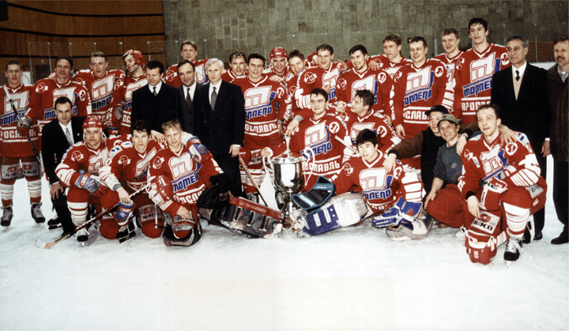
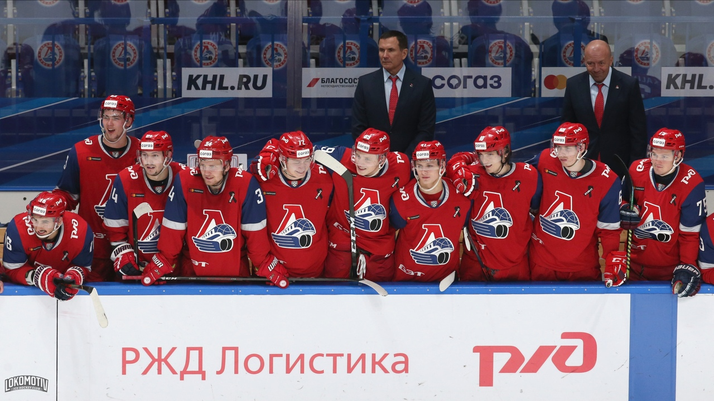

Впервые хоккейная команда с названием «Локомотив» в Ярославле была образована в 1949 году. Именно «железнодорожникам» предстояло представлять наш город в первенстве РСФСР. Это знаменательное событие случилось в сезоне 1949/50 гг. Первый матч наш «Локомотив» провел 8 января 1950 года с калининской командой «Спартак».
Сейчас существуют достоверные данные, что команда «Локомотив» в Ярославле существовала и в следующем сезоне – 1950/51 гг. Однако она не смогла достичь больших успехов и была расформирована. Далее честь нашего города на всероссийской и всесоюзной хоккейных аренах представляли команды «Спартак», «Химик», а также коллектив Ярославского Моторного Завода под различными названиями.
На стыке тысячелетий – в 2000-м году флаг «Локомотива» вновь взвился над хоккейной Россией и Ярославлем, в частности это стало возможным благодаря тому, что генеральным спонсором и партнером клуба выступило Министерство Путей Сообщения России, ныне ОАО «Российские Железные Дороги».

"Торпедо" (Ярославль) - первый чемпион России, 1997 год
Текущий сезон для ярославского Локомотива обещает быть двольно продуктивным. Руководство "железнодорожников" в межсезонье сделало несколько громких трансферов, которые просто обязаны усилить игру Локо. Стан ярославцев пополнили:
Матчи, которые уже были сыграны в этом сезоне, внушают уверенность в то, что наша команда точно составит конкуренцию клубам КХЛ в борьбе за Кубок Гагарина. Верим и ждем!
